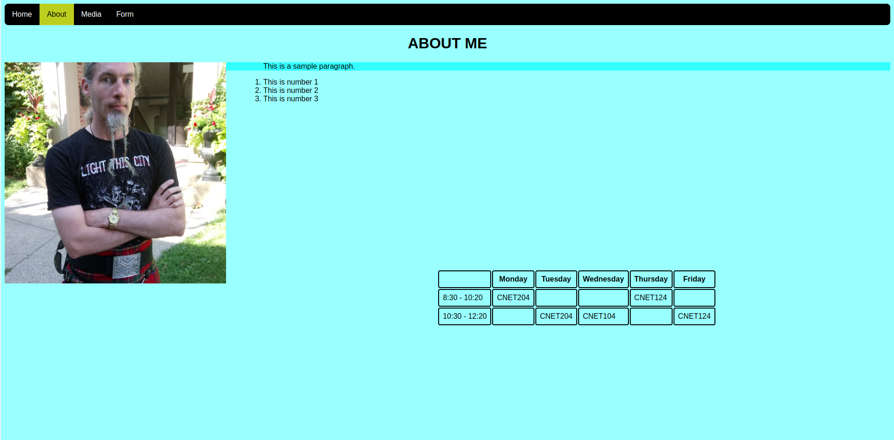

Lab 8 - Audio & Video
Overview
This week's lab will cover the following:
- Creating a new page, called lab8.html
- Learning how to use HTML5 to embed audio and video navtively
Creating a new page
Create a new page called lab8.html, that meets the following criteria. Refer to your previous lab instructions for instructions on how to do each of the following if needed.
- Use the HTML5 doctype declaration
- Set the Title to "Lab 8", without the quotes
- Insert meta tags indicating the encoding (charset) of utf-8, viewport and the author to your name
- Insert a comment indicating your name and student number
- Link your style sheet to the page
- Make use of the main tag, as we did in Lab 3
- Copy your navigation bar from your index page and modify it to properly indicate your current page
Introducing audio and video
Prior to HTML5, plugins (like Flash) were required to play audio or video in the browser. With HTML5, audio and video playback are now natively available (without a plugin).
Insert the audio tag
Add the opening audio tag and it's corresponding closing tag (at the top of your main section) by adding the following tag.
<audio controls> </audio>
Notice the controls attribute. Without this, the element won't appear in the browser (as there's no way to interact with it).
Adding some content
Using this free resource (provided by videvo), select an audio file of your choice and add it using the w3schools example. For this to work you will have to first download the audio file. You can then upload the file to your server (if you are able to access it).
Insert the video tag
Add the opening video tag and it's corresponding closing tag (at the top of your main section) by adding the following tag.
<video> </video>
Using this free resource (provided by the videvo), select an video of your choice and add it using the w3schools example. Be sure to select a video labelled free. Again, for this to work you will have to first download the file. You can then upload the file to your server (if you are able to access it). Note the optional autoplay attribute, which isn't ideal - omit this.
You may wish to resize your video, using the width and height parameters (included in the w3schools example). Experiment with these until you achieve a result you're happy with. You may also wish to add a few line breaks in, to assist in spacing the audio and video elements.
Adding a video from YouTube
Sometimes you may wish to embed a video from another platform (such as YouTube) instead of hosting your own. These take up less space, as they are being stored by YouTube, not you. You can do this using the iframe tag.
To add a video from YouTube, first browse to a video you want. Once you have found your video:
- Click the share button.
- Click Embed (the button labelled with < >).
- Note the embed options you can select.
- Copy the iframe code and paste it into your html document.
Completing the Lab
Upon completion of this lab you should have a web page with an embedded audio and video file. Your page should validate using the w3schools html validator & css validator. Your page should look similar to the following:
Exploration Questions
- What tag did you use to insert an audio clip?
- What tag did you use to insert an video clip?
- What happens when you omit the controls attribute for video?
- How do you make a video auto play?
- What happens when you omit the controls attribute for audio?
- Does video autoplay work on mobile devices?
- What video formats are supported in HTML5?
- What audio formats are supported in HTML5?